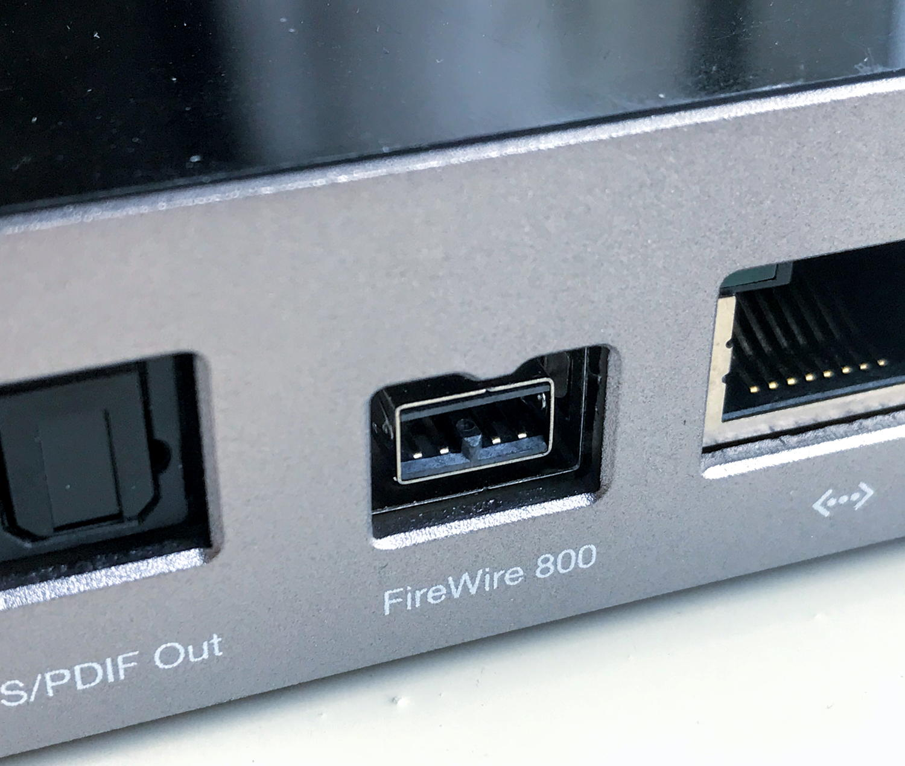

Dispositivos de sonido
Las placas de audio nacen en los finales de los 80 casi con la primera masificación de las computadoras personales compatibles con IBM. Las tarjetas de sonido son componentes hardware que permiten a las computadoras producir sonido. Facilitan la reproducción de audio y son esenciales para disfrutar de una experiencia multimedia completa en una PC.
Nos centraremos en los USB (versiones 1 y 2), PCI (versión estándar y express) y FireWire; dado que son los que poseen las placas de
audio actuales.
- USB 1.0: Puerto universal, desde su creación en 1996, aparecieron mouses, impresoras y webcams primero y luego: placas de audio, interfases midi, mp3, 4 y 5, etc. Las placas de Audio USB 1 (ya sean 1.0 como 1.1), por su
escasa velocidad de transmisión y ancho de banda, tienen la desventaja de no permitir manejar múltiples conversores de alta resolución

- USB 2.0: Utiliza los mismos conectores que las versiones 1 pero con mayor velocidad lo cual hace posible que las placas de audio manejen hasta 18 entradas a 24 bit y 96 kHz.

- PCI: Es interno, es decir que se encuentra dentro del gabinete de la computadora, incorporado en la placa madre. Tiene forma de zócalo de conexión y ha reemplazado a su predecesor denominado ISA por ser mucho
más versátil y veloz.
- PCI express: Se trata de una nueva apuesta de Intel, una versión mejorada del PCI estándar con mucho más velocidad, superando incluso a la del FireWire, y menor tamaño de zócalo. Actualmente las placas madre han reemplazado los slots PCI por los PCIX.

- FireWire: Desarrollado por Apple para competir con el USB de Intel, tiene la ventaja de ser mucho más veloz (más de 50 veces). Las placas de audio FireWire pueden ser apilables pero son más costosas . Otra desventaja es que la mayoría las PC compatibles con IBM no lo traen incorporado a la placa madre como sucede con el USB, en consecuencia para conectar una
placa de audio Firewire es necesario comprar aparte una placa conversora PCI a Firewire para agregarle a nuestra máquina.

¿Cómo Funcionan?
Las tarjetas de sonido procesan señales de audio digitales y las convierten en señales analógicas que pueden ser reproducidas a través de altavoces o auriculares. También gestionan la entrada de audio, permitiendo la grabación de sonidos mediante micrófonos u otros dispositivos.
¿Por qué no es un componente crítico?
Aunque las tarjetas de sonido desempeñan un papel importante en la experiencia de audio, no son consideradas críticas para el funcionamiento fundamental de una PC. Esto se debe a que muchas placas base modernas incorporan tarjetas de sonido integradas que cumplen con las necesidades básicas de reproducción de audio. Además, en entornos donde el rendimiento es crucial, como servidores o estaciones de trabajo especializadas, el énfasis se coloca en otros componentes.
En resumen, la ausencia de una tarjeta de sonido independiente no impide el funcionamiento esencial de una PC, especialmente cuando se trata de tareas no centradas en el audio.